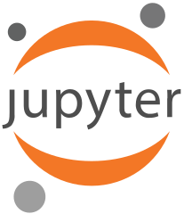

SL-UCA: Hello, head!
José Carlos García & Rafael Rodríguez
- ¿Qué es el software libre?
- Algunos proyectos de software libre científico
- Mathics: Una alternativa a Wolfram Mathematica
- DEMO
- Colaborar en Mathics
- Crear un módulo de Jupyter
¿Qué es el software libre?

Principios básicos

El software libre en la ciencia
Software libre en la ciencia

Ejemplos
-
Python
- Scipy, Jupyter, Cython, Tensorflow, CVXOPT...
-
C/C++
- OpenCL, OpenMPI, SymbolicC++, GMP...
- GNU Octave
- AWK
- R
- GLPK
- Prometheus
- ...
Mathics

Características
- Cálculo simbólico usando Sympy
- Creación de módulos y funciones
- Bucles, condiciones lógicas
- Gráficos en 2D y 3D
- Multiplataforma
- Fácil de colaborar
- Optimización de funciones con restricciones
- Soporte para Jupyter
Carencias
- Cálculo numérico
- Alto rendimiento
- Retrocompatibilidad con Wolfram Mathematica
- Programación lineal
- Análisis de datos e inteligencia artificial
Demo
Colaborar con Mathics
- Revisamos las issues en GitHub
- Hacemos un fork del proyecto de Mathics desde Github
- Añadimos la funcionalidad nueva que queremos, y subimos los cambios a Github (Ejemplo)
- Creamos un pull request
Creación de un kernel de Jupyter
Extendiendo una clase en Python
from ipykernel.kernelbase import Kernel
...
class MyNewKernel(Kernel):
implementation = 'newlanguage'
implementation_version = '1.0'
banner = 'My new Kernel - Implementation'
name = 'NewKernelNotebook'
...
def do_complete(self, code, cursor_pos):
...
def do_execute(self, code, silent):
Enviar el resultado a Jupyter
self.send_response(self.iopub_socket, 'display_data', data)
Sobre mi
- Graduado en Matemáticas por la Universidad de Cádiz
- Encargado de proyectos de desarrollo relacionados con Ing. Telecomunicaciones
- DevSecOps en Crononauta SL
- Alta experiencia en software de análisis de datos como Prometheus
- Experiencia en sistemas y entornos clouds (AWS)
Mis proyectos personales
- Mi página personal: josecarlos.me
- Github: JoseCarlosGarcia95
- Sophie: Un software científico multiuso, extensible y de alto rendimiento